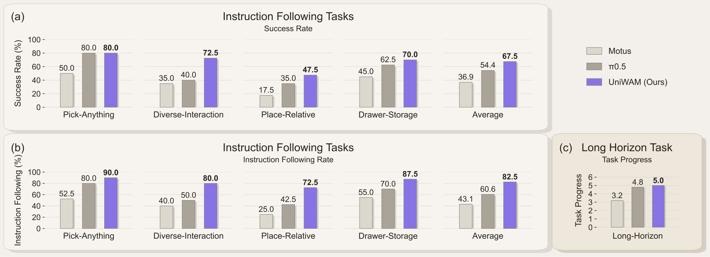
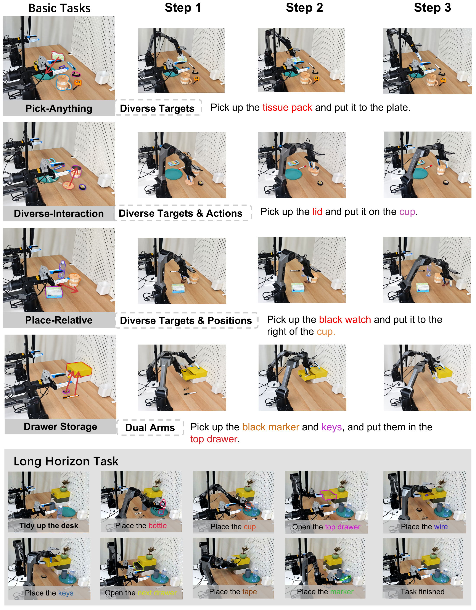
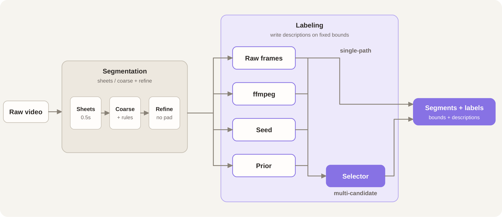
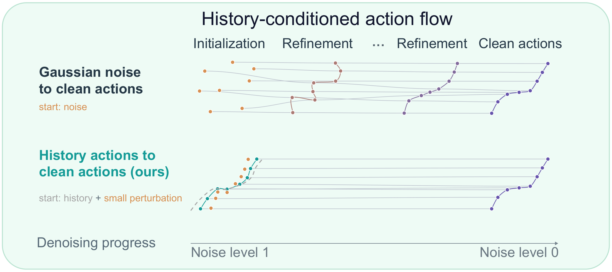
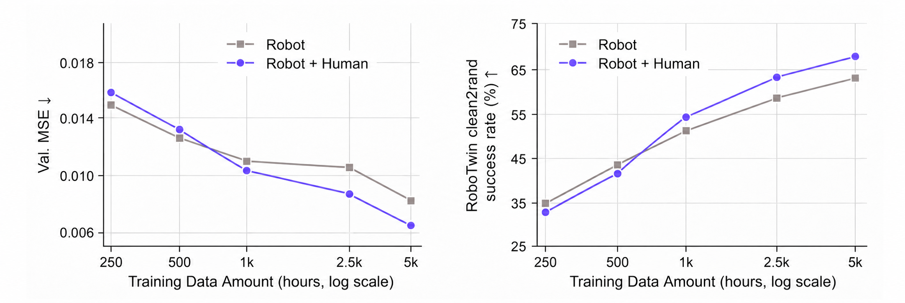
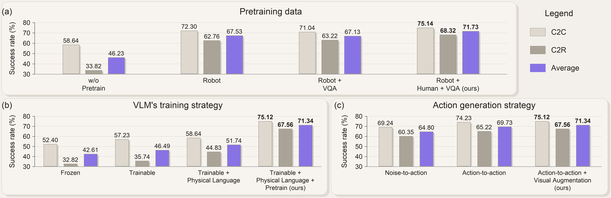

Pick-Anything
Identify and grasp the target object in a multi-object scene.
UniWAM Team
1The Hong Kong University of Science and Technology (Guangzhou) 2OLA Dimensions 3Carnegie Mellon University 4Peking University 5Shanghai Jiao Tong University 6Beijing Academy of Artificial Intelligence
Identify and grasp the target object in a multi-object scene.
Ground both the target object and the requested interaction.
Place an object in the instructed spatial relation to another object.
Coordinate both arms to open a drawer and store the target object.
Follow “Tidy up the desk.” through cup placement, drawer storage, and marker placement.
Vision-language-action models benefit from the understanding and reasoning capabilities of pretrained vision-language models, but action-only supervision provides limited grounding in world dynamics. Conversely, world-action models inherit spatiotemporal priors from video generation models, yet remain limited in semantic understanding and reasoning under distribution shifts. We introduce UniWAM, a unified architecture that integrates a physical reasoner, a world generator, and an action predictor to jointly learn semantic understanding of the physical world, visual generation, and action prediction. To ensure the quality of the training data, we developed a rigorous data cleaning and annotation pipeline for both human egocentric data and robot data. To adapt the vision-language component to embodied tasks while preserving its inherited language capabilities, we represent low-level actions in natural language and introduce a pre-training recipe that assigns complementary supervision from visual question answering (VQA) data, human egocentric data, and robot demonstrations to the appropriate model components. During post-training, future visual noise augmentation reduces reliance on precise future predictions, while history-conditioned flow matching uses encoded action history to initialize action generation. Together, these designs significantly reduce denoising steps while maintaining performance. UniWAM achieves state-of-the-art (SOTA) performance across multiple evaluations, including in-distribution performance, robustness, generalization, instruction following, and long-horizon task execution. Furthermore, we uncover a log-linear scaling law of unified human-robot co-training, demonstrating the effectiveness of large-scale pre-training on a mixture of human and robot data.
Robot demonstrations, human egocentric data, and VQA provide complementary supervision; source-level ablations evaluate their contributions.
Recent action history and perturbed future visual latents are incorporated into joint flow matching.
Simulation and real-world evaluations assess in-distribution performance, robustness, generalization, instruction following, and long-horizon execution.
The report studies a log-linear scaling relationship for unified human–robot co-training and the gains from mixed-data pre-training.
UniWAM also achieves 75.14% success in RoboTwin 2.0 Clean2Clean (C2C). Clean2Rand (C2R) evaluates policies trained on clean data under domain randomization.
Comparisons below refer only to the methods listed in each table. Bold and underlined values reproduce the report’s table annotations; † preserves a source marker from the report. Swipe or scroll wide tables to see all columns.
| Method | Spatial | Object | Goal | Long | Average ↑ |
|---|---|---|---|---|---|
| π₀ | 98.0 | 96.8 | 94.4 | 88.4 | 94.4 |
| PD-VLA | 95.5 | 96.7 | 94.9 | 91.7 | 94.7 |
| π₀.₅ | 98.8 | 98.2 | 98.0 | 92.4 | 96.9 |
| GR00T-N1.7 | 97.7 | 98.5 | 97.5 | 94.4 | 97.0 |
| OpenVLA-OFT | 97.6 | 98.4 | 97.9 | 94.5 | 97.1 |
| Fast-WAM | 98.2 | 100.0 | 97.0 | 95.2 | 97.6 |
| Motus | 96.8 | 99.8 | 96.6 | 97.6 | 97.7 |
| VLA-Adapter | 99.6 | 99.6 | 98.2 | 96.4 | 98.5 |
| X-VLA | 98.2 | 98.6 | 97.8 | 97.6 | 98.1 |
| Cosmos-Policy | 98.1 | 100.0 | 98.2 | 97.6 | 98.5 |
| LingBot-VA | 98.5 | 99.6 | 97.2 | 98.5 | 98.5 |
| Spatial Forcing | 99.4 | 99.6 | 98.8 | 96.0 | 98.5 |
| Xiaomi-Robotics-0 | 98.8 | 100.0 | 98.8 | 97.2 | 98.7 |
| UniWAM (Ours) | 99.6 | 99.6 | 99.2 | 98.4 | 99.2 |
| Method | Camera | Robot | Language | Light | Background | Noise | Layout | Total |
|---|---|---|---|---|---|---|---|---|
| π₀ | 79.6 | 21.1 | 72.5 | 84.7 | 86.2 | 68.3 | 69.4 | 67.4 |
| GR00T-N1.6 | 92.6 | 33.5 | 80.1 | 93.6 | 95.4 | 93.6 | 75.0 | 79.4 |
| OpenVLA-OFT | 92.8 | 30.3 | 85.8 | 94.9 | 93.9 | 89.3 | 77.6 | 79.5 |
| Spatial Forcing | 95.2 | 47.9 | 73.5 | 91.2 | 95.6 | 92.2 | 74.8 | 80.5 |
| MemoryVLA | 91.4 | 48.6 | 79.4 | 95.2 | 95.3 | 94.0 | 75.7 | 81.9 |
| π₀.₅ | 87.6 | 78.4 | 80.0 | 92.6 | 91.6 | 91.4 | 81.8 | 86.2 |
| ACoT-VLA | 96.6 | 70.4 | 79.7 | 95.1 | 97.1 | 95.9 | 85.0 | 88.0 |
| Kairos | 95.5 | 72.6 | 86.8 | 97.7 | 95.8 | 96.8 | 81.5 | 89.0 |
| UniWAM (Ours) | 92.0 | 89.5 | 92.2 | 97.9 | 97.6 | 94.3 | 84.6 | 92.6 |
| Method | C2C | C2R | Average |
|---|---|---|---|
| VLA | |||
| GR00T-N1.7† | 43.6 | 20.7 | 32.2 |
| StarVLA† | 58.1 | 10.6 | 34.4 |
| Xiaomi Robotics-0 | 62.90 | 18.20 | 40.55 |
| Abot-M0 | 57.40 | 30.36 | 43.88 |
| X-VLA | 68.00 | 20.90 | 44.45 |
| Spatial Forcing | 77.20 | 26.74 | 51.97 |
| π₀.₅ | 70.70 | 46.00 | 58.35 |
| GigaBrain-0.7 | 66.80 | 67.90 | 67.35 |
| WAM | |||
| AHA-WAM† | 64.3 | 3.2 | 33.8 |
| FastWAM | 70.20 | 1.20 | 37.70 |
| X-WAM | 70.00 | 25.80 | 47.90 |
| 4D-WAM† | 81.5 | 41.8 | 61.7 |
| OpenWAM-α† | 89.4 | 48.7 | 69.0 |
| UniWAM (ours) | 75.14 | 68.32 | 71.73 |
Across four instruction-following tasks, UniWAM achieves an average task success rate of 67.5% and an instruction-following rate of 82.5%. In long-horizon tabletop organization, average Task Progress is 5.0 out of 6, compared with 4.8 for π₀.₅ and 3.2 for Motus.

The real-world setup uses two AgileX Piper arms, each with six degrees of freedom and a parallel gripper. Each arm has a wrist-mounted camera, complemented by a third-person camera with a global view of the workspace.

UniWAM connects a Physical Reasoner, a World Generator, and an Action Predictor through joint multimodal attention. The Physical Reasoner uses Qwen3-VL-2B-Instruct; the World Generator uses Wan2.2-TI2V-5B; the Action Predictor models a continuous action flow field.

Robot demonstrations, human egocentric data, and visual question answering jointly support action learning, future visual prediction, and semantic understanding. Physical language expresses local manipulation behavior in natural language, providing shared supervision for human and robot data.
The data pipeline cleans and annotates robot and human demonstrations. For EgoDex, EgoANT segments recordings into atomic manipulation subtasks and produces concise descriptions of each segment.

Future visual noise augmentation reduces dependence on precise future predictions. History-conditioned flow matching initializes action generation from perturbed action history and refines it toward future actions; the visual source remains Gaussian noise.

The report compares robot-only and robot-plus-human training with VQA in both settings. Human data becomes beneficial at larger robot-data scales, alongside improvements in validation loss and downstream RoboTwin performance.

Ablations examine pre-training data composition, the Physical Reasoner’s training strategy, and action generation. The full three-source configuration reaches 71.73% average success across RoboTwin C2C and C2R.

Formal citation details will be added when the technical report is released.